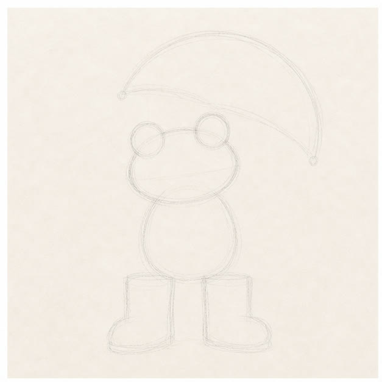
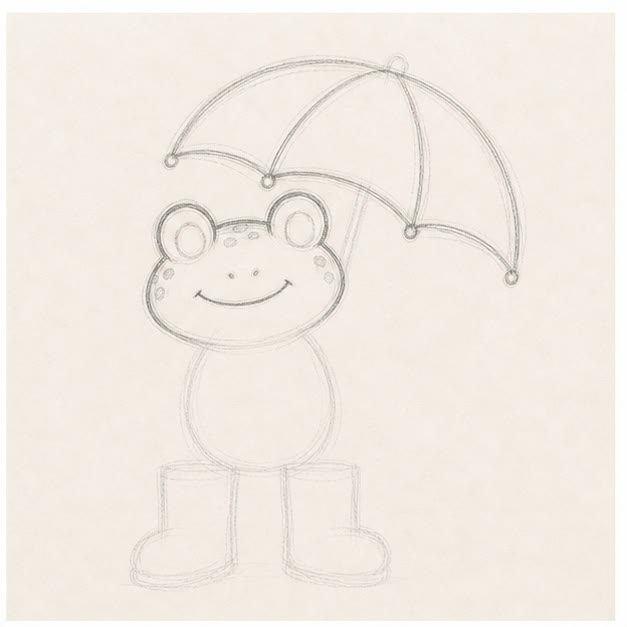
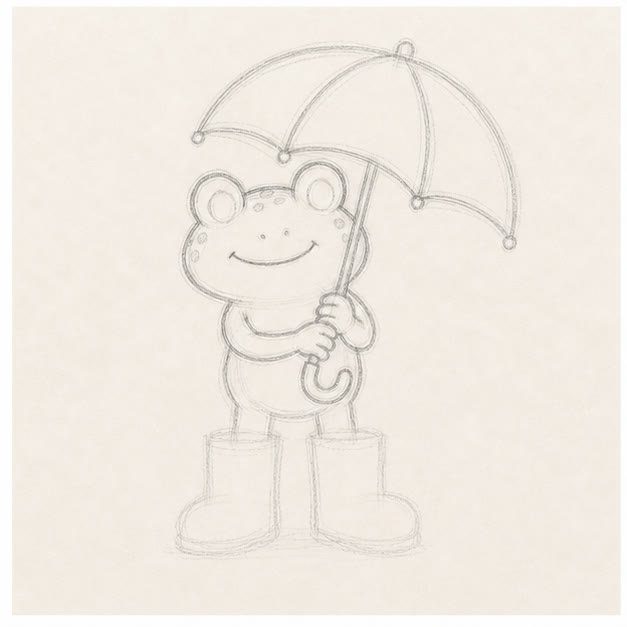
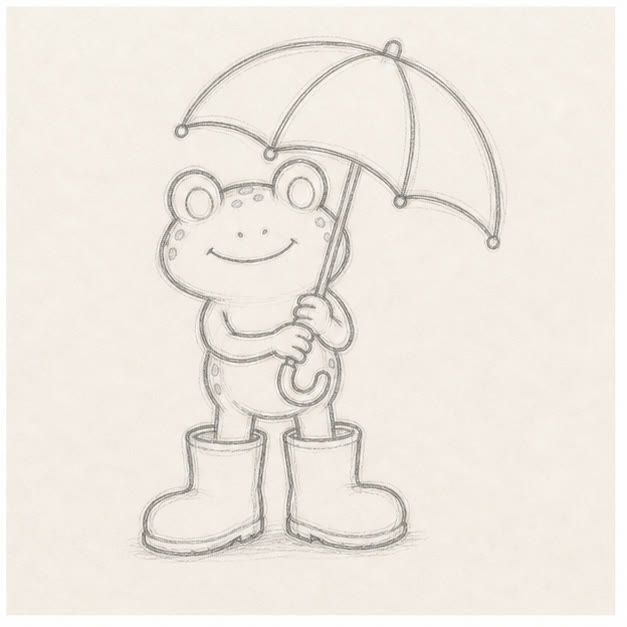

From the archive
Let's draw a rainy-day frog
Work lightly through the construction, then darken only the lines that help the finished sketch.
-
01

Block in the big shapes
Use light circles for the eyes, a wide rounded head, an oval body, two boot blocks, and a broad umbrella arc above.
Sketch tip: Make the umbrella wider than the frog. That big curve is what sells the rainy-day pose.
-
02

Draw the face and umbrella
Round out the frog's head, add the eye rings, a simple smile, cheek spots, and the umbrella ribs.
Sketch tip: Keep the face low and wide. A tiny smile under big eyes makes the character feel playful.
-
03

Add arms and the handle
Sketch the body, then wrap two simple arms and little hands around the umbrella handle.
Sketch tip: Let the handle tilt through the frog's body. The hands only need a few curved fingers.
-
04

Finish the boots
Turn the boot blocks into oversized rain boots with soft openings, rounded toes, and dark sole lines.
Sketch tip: Big boots make the cartoon work. Keep them wider than the frog's legs.
-
05
Color the rainy details
Darken the useful contours, then add loose green, yellow, and blue colored-pencil strokes.
Sketch tip: Leave white paper in the belly, umbrella, and boots so the drawing still feels quick and sketchy.